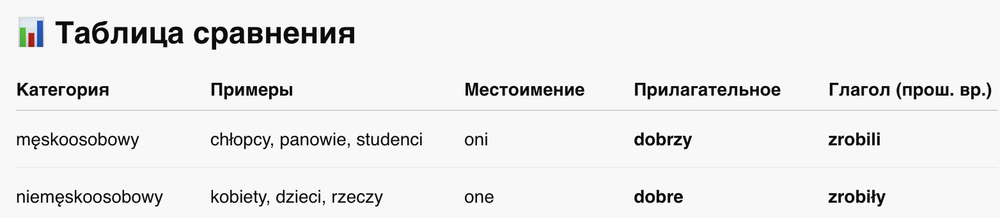
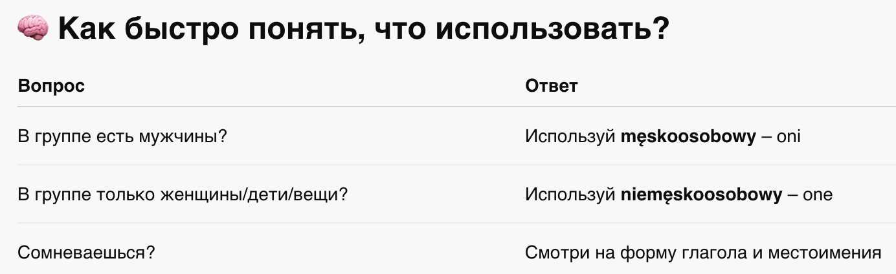

📘 Глава 4: Род во множественном числе
👥 Rodzaj w liczbie mnogiej
1. Rodzaj męskoosobowy
2. Rodzaj niemęskoosobowy
3. Важные особенности
4. Как быстро понять, что использовать?
📍 Что нужно знать?
Во множественном числе в польском языке нет привычного "мужской / женский / средний род".
Вместо этого появляются две новые грамматические категории рода, которые влияют на всё согласование в предложении.
🧑🤝🧑 1. Rodzaj męskoosobowy
👉 Мужской одушевлённый род (во множественном числе)
Используется, если в группе есть хотя бы один мужчина (или лицо мужского пола).
🔹 Примеры:
- chłopcy – мальчики
- ojcowie – отцы
- nauczyciele – учителя (мужчины)
- Jan i dzieci → oni (даже если детей больше!)
📌 Характерные признаки:
- местоимение: oni
- прилагательное: dobrzy, mądrzy
- глагол (прош. вр.): zrobili, byli
- вопросительное слово: jacy?
🐕🦺 2. Rodzaj niemęskoosobowy
👉 Немужской одушевлённый род (всё остальное)
Используется:
- для женщин
- для детей
- для животных
- для вещей
- для абстрактных понятий
🔹 Примеры:
- kobiety – женщины
- dzieci – дети
- psy – собаки
- rzeczy – вещи
- książki – книги
📌 Характерные признаки:
- местоимение: one
- прилагательное: dobre, ładne, złe
- глагол (прош. вр.): zrobiły, były
- вопросительное слово: jakie?
⚠️ Важные особенности

-
Если в группе есть хотя бы один мужчина, то используется męskoosobowy:
- Jan i dziewczyny → oni
- Tata i dzieci → oni
- Bracia i siostry → oni
-
Женщины, животные, дети — всегда niemęskoosobowy:
- One są zmęczone.
- Dzieci były grzeczne.
- Te koty są ładne.
🧠 4. Как быстро понять, что использовать?
